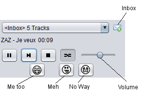
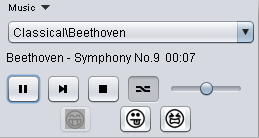
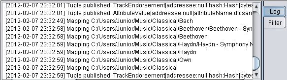

Getting Started
Using Sneer with others is more fun. Call a friend to try it out with you.
» Downloading
-
This will download source code, binaries and launch Sneer.
Automatic installation:
or
Manual installation: Sneer (requires Java 7 Webstart).
You will be prompted for a secret passphrase. It should be more than 30 characters long and unique to you, for example: your childhood phone number followed by a verse from your favorite song.

Congratulations, you now have a sovereign seal! You can publish it so that other people can connect to you securely.
Enter your name in the "Own Info" screen that will appear and you're done.
{kind=link}
» Adding a Friend
-
Go to the My Contacts menu and click on New Contact...

Right-click on the new contact › Edit Contact.
Enter any nickname for your friend and paste his/her seal.

Your friend will have to do the same thing for you on his side.
Either you or your friend (or both) will have to fill in the host and port fields for the other person. You can find out your host IP address here. You can find out your seal and port number in the "Main Menu › Own Info" screen.
Close the "Contact Info" window.
When a green light beside your friend's nickname appears it means that you're connected! If you cannot get a connection, find a sovereign friend to help you forward your port on your router.
» MP3 Sharing with No Way Technology
-
Want to share songs you and your friends wrote? You guys have cool tracks that are public domain?
Sneer will download random tracks from your friends to surprise you.
As soon as you begin to listen to the tracks that have been downloaded already, three icons will appear below under the player control buttons. Click on the “Me Too” icon (the happy face) if you like the song and want Sneer to download similar tracks. Click on the “Meh” icon (the face showing its tongue) if you don’t like the song and want Sneer to delete downloaded track, but do not want to influence your preferences. And click on the “No Way” icon (the cringing face) if you do not like the song, so that Sneer deletes the downloaded track and does not download similar ones.
Using No Way technology, Sneer will actually learn about your musical taste! The more tracks you download from your friends, the better the software will become at determining your preferences and download songs you like better.
Click on Menu › Music to open the player.
The player will appear at the bottom of the Sneer window. Hover over the player and click on Music › Choose Tracks Folder...
Choose the folder with the tracks which you want Sneer to share with your friends. All subfolders will be shared as well.

OK! Now you have a drop-down list with all the subfolders in the folder you had selected earlier as well as one ‹Inbox› option. This inbox option contains the tracks Sneer has downloaded from your friends. The counter (beside the inbox option) will increase for every friend’s track received.

To listen to your tracks, choose a folder from the drop-down list and your songs will begin to play.
Great! Now you can listen to your own music folders using Sneer, but before you can share any of your tracks, you must allow the program to map them all (this process can take a while).
To monitor the mapping task and any other tasks Sneer is running, check the Log Console by clicking on Menu › Open Log Console

The following screen will open, logging Sneer’s events.
As soon as Sneer is done mapping, it will begin to download songs from your online friends. If you want to follow the progress of your downloads, go to Menu › Downloads...
Label the songs in your inbox in order for Sneer to download more songs and cater to your preferences.
» Send files or folders
-
Right click on the name of the contact you wish to send documents to. Select the option "Send Files or Folders". A window will pop-up, from which you must choose the flie or folder you wich to send your friend.
» Uninstalling
-
To uninstall, simply delete the folder named sneer in your home folder.